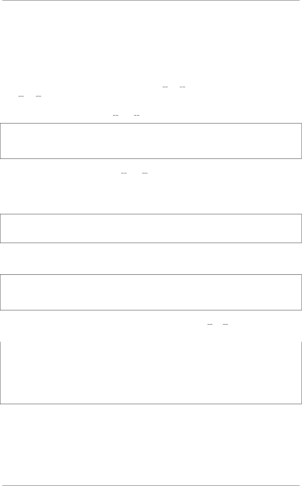

《Python Cookbook》第三版, Release 2.0.0
12.5.3 讨论
在这里工作的机制被称为“包命名空间”的一个特征。从本质上讲，包命名空间是
一种特殊的封装设计，为合并不同的目录的代码到一个共同的命名空间。对于大的框
架，这可能是有用的，因为它允许一个框架的部分被单独地安装下载。它也使人们能
够轻松地为这样的框架编写第三方附加组件和其他扩展。
包命名空间的关键是确保顶级目录中没有 init .py 文件来作为共同的命名空间。
缺失 init .py 文件使得在导入包的时候会发生有趣的事情：这并没有产生错误，解释
器创建了一个由所有包含匹配包名的目录组成的列表。特殊的包命名空间模块被创建，
只读的目录列表副本被存储在其 path 变量中。举个例子：
>>> import spam
>>> spam.__path__
_NamespacePath(['foo-package/spam','bar-package/spam'])
>>>
在定位包的子组件时，目录 path 将被用到 (例 如,当 导 入 spam.grok 或 者
spam.blah 的时候).
包命名空间的一个重要特点是任何人都可以用自己的代码来扩展命名空间。举个例
子，假设你自己的代码目录像这样：
my-package/
spam/
custom.py
如果你将你的代码目录和其他包一起添加到 sys.path，这将无缝地合并到别的
spam 包目录中：
>>> import spam.custom
>>> import spam.grok
>>> import spam.blah
>>>
一个包是否被作为一个包命名空间的主要方法是检查其 file 属性。如果没有，那
包是个命名空间。这也可以由其字符表现形式中的“namespace”这个词体现出来。
>>> spam.__file__
Traceback (most recent call last):
File "<stdin>", line 1,in <module>
AttributeError:'module'object has no attribute '__file__'
>>> spam
<module 'spam'(namespace)>
>>>
更多的包命名空间信息可以查看 PEP 420.
12.5. 10.5 利用命名空间导入目录分散的代码 371